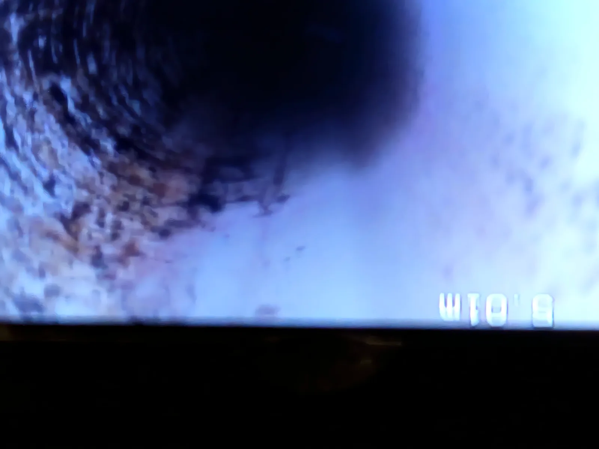
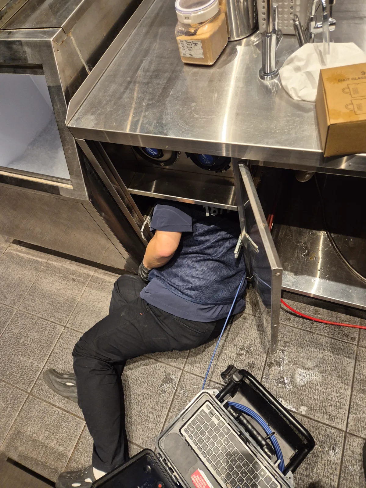

서초구 서초동 하수구막힘, 현장 도착 후 진단
서울 서초구 서초동 커피숍에서 하수구막힘을 점검한 현장입니다. 배수 통로에는 커피 찌꺼기와 기름이 섞인 슬러지가 많이 쌓여 있었고, 출수부 쪽에도 찌꺼기가 있어 배관 전체에 물이 차 있는 상태였습니다. 이번 작업에서는 쌓인 이물질을 제거하는 것과 제거 후에도 물이 남는 이유를 확인하는 것이 모두 필요했습니다.
하수구가 막혔을 때 입구의 찌꺼기만 치우면 해결될 것처럼 보일 수 있지만, 여러 장비의 배수가 연결된 커피숍은 안쪽 흐름까지 살펴봐야 합니다. 이곳은 작업 공간이 충분하지 않아 처음 접근한 위치에서 배관을 따라 작업하기 어려웠습니다. 제빙기 옆에서 별도 배수구를 찾아 접근 지점을 확보하고, 제빙기 안쪽과 커피머신 아래쪽으로 이어지는 배관까지 통수 작업을 진행했습니다.
서초동 커피숍 하수구막힘의 상태를 파악하기 위해 내시경 검사와 샤프트 작업을 병행했습니다. 처음에는 물과 찌꺼기가 통로를 채우고 있어 막힘 제거 전후를 비교하는 과정이 중요했습니다. 이번 하수구막힘은 찌꺼기를 제거한 뒤 배수가 시작됐지만, 일부 구간에는 물이 계속 남았습니다. 그 구간에서 역구배 문제를 확인했습니다.
1단계: 증상 확인과 필요한 장비 작업
첫 단계에서는 좁은 공간 안에서 작업 가능한 배수구를 찾는 데 집중했습니다. 제빙기 옆의 별도 배수구는 장비 아래로 이어진 관에 접근할 수 있는 지점이었습니다. 서초구 서초동 하수구막힘 현장의 배수 경로를 따라 제빙기 안쪽과 커피머신 하부 배관을 작업하면서, 한쪽 입구만 정리하고 끝내지 않도록 연결된 구간을 살폈습니다.
샤프트 작업은 배관에 쌓인 커피 찌꺼기와 기름 슬러지를 처리해 물이 지나갈 통로를 확보하기 위한 과정이었습니다. 내시경으로 내부 상태를 살피고 샤프트 작업을 이어가는 방식을 반복했습니다. 출수부 쪽까지 찌꺼기가 많이 쌓여 있으면 앞쪽에서 물을 흘려도 뒤쪽으로 빠져나가지 못하므로, 배수 방향을 따라 막힌 부분을 처리해야 했습니다.
이번 하수구막힘 작업은 공간의 제약 때문에 접근 위치와 작업 범위를 함께 고려해야 했습니다. 사진에는 작업자가 하부의 좁은 공간에 들어가 배관 작업을 이어가는 모습이 담겨 있습니다. 내시경은 안쪽 상태를 확인하는 데, 샤프트는 물길을 방해하는 축적물을 제거하는 데 사용했습니다. 두 작업을 병행하며 찌꺼기를 처리하고 배수 변화가 생기는지 확인했습니다.

2단계: 원인 구간 처리와 정상 작동 확인
커피 찌꺼기와 슬러지를 제거하자 배관 전체를 채우고 있던 물이 출수부 쪽으로 내려가기 시작했습니다. 다만 하수구막힘을 처리한 뒤에도 특정 구간에 물이 계속 차 있는 모습이 내시경에서 확인됐습니다. 통로를 막던 이물질은 제거했는데 물이 남는 구간이 있어, 남아 있는 찌꺼기 때문인지 배관의 기울기 문제인지 구분해서 살펴봤습니다.
확인된 문제는 역구배 구간이었습니다. 배수관은 물이 빠져나가는 방향으로 적절한 기울기가 유지되어야 하는데, 그 흐름이 맞지 않는 구간에서는 통로가 열려 있어도 물이 고일 수 있습니다. 이 현장에서는 통수 후 물이 내려가는 상태로 바뀌었지만, 역구배 구간의 잔수까지 없어진 것은 아니었습니다. 첨부 영상은 바로 이 남아 있는 물을 기록한 자료입니다.
서초동 하수구막힘의 결과를 판단할 때는 배수가 회복된 부분과 구조적으로 남은 문제를 함께 봐야 합니다. 샤프트로 찌꺼기를 제거하는 작업은 배관의 높이나 기울기를 바꾸는 공사가 아닙니다. 따라서 같은 지점에 장비 작업을 더 반복하는 것만으로 역구배를 바로잡을 수는 없습니다. 이번 현장에서는 이물질 제거와 통수를 마친 뒤에도 구배 보수가 필요한 상태임을 확인했습니다.

작업 결과와 재발 방지 안내
서초구 서초동 커피숍 하수구막힘은 커피 찌꺼기와 기름 슬러지를 제거해 물이 내려가도록 처리했습니다. 처음 배관 전체에 물이 차 있던 상태와 달리 배수 흐름은 회복됐으나, 역구배 구간에는 물이 남았습니다. 이번 작업 범위는 내시경 점검과 샤프트를 통한 통수이며, 배관 교체나 앵커 설치를 완료한 현장은 아닙니다.
남은 물 고임을 개선하려면 배관공사를 통해 구배를 다시 잡는 방안을 검토해야 합니다. 실제 배관의 처짐과 고정 상태를 확인한 뒤 필요한 구간을 새 배관으로 구성하거나, 앵커 등 지지·고정 방법으로 높이와 기울기를 조정하는 방식이 필요합니다. 어떤 범위를 교체하고 어디를 고정할지는 현장 구조에 맞춰 정해야 하며, 통수 작업과 별도로 판단할 부분입니다.
커피숍 하수구막힘의 재발을 줄이려면 커피 찌꺼기를 배수구에 흘려보내지 않고 따로 수거하는 관리가 필요합니다. 기름 성분이 섞인 찌꺼기가 계속 유입되면 배관 안에 다시 축적될 수 있으며, 물이 남는 구간은 관리만으로 구조가 개선되지 않습니다. 서초동에서 하수구 뚫는 업체에 상담할 때는 막힘 제거 후에도 잔수가 남는지, 구배 점검과 보수가 필요한지도 함께 확인하는 것이 좋습니다. 신라건축설비는 이번 현장에서 통수로 개선된 상태와 별도 보수가 필요한 구간을 구분해 기록했습니다.
최종 조치: 하수구막힘 원인인 찌꺼기를 제거해 통수를 회복했으며, 역구배 구간의 잔수는 남아 구배 보수가 필요함
현장 영상
현장 방문 전 확인하는 비용과 작업 범위
신라건축설비는 현장 증상과 배관 구조를 확인한 뒤 필요한 작업과 예상 비용을 안내합니다. 단순 관통으로 해결되는지, 배관내시경·석션·고압세척 또는 추가 장비가 필요한지는 현장 상태에 따라 달라집니다. 출장비와 야간 작업비, 추가 장비 비용이 발생할 수 있는 경우 작업 전에 먼저 설명하고 동의를 받은 범위에서 진행합니다.
업체를 선택할 때 확인할 사항
무조건적인 ‘0원’ 표현보다 실제 작업 범위, 추가 비용 조건, 사용 장비와 사후 대응 기준을 확인하는 것이 중요합니다. 해결되지 않았을 때의 비용 기준과 작업 후 동일 증상 발생 시 점검 범위를 사전에 문의해두면 불필요한 분쟁을 줄일 수 있습니다.
서초구 하수구막힘 자주 묻는 질문
하수구막힘은 왜 반복되나요?
서초구 서초동 현장처럼 커피숍 배수관에 물이 차고 배수가 원활하지 않은 상태 증상은 원인이 현장마다 다를 수 있습니다. 배관 내부 기름 슬러지·생활 오염물·스케일이 충분히 제거되지 않았거나 오수관·공용배관 구간에 문제가 있으면 반복될 수 있습니다. 재발 시 막힌 위치와 배관 상태를 함께 확인합니다.
하수구가 역류하거나 물이 안 내려가면 하수구뚫는업체를 불러야 하나요?
바닥 배수구가 역류하거나 여러 배수구에서 동시에 물이 빠지지 않으면 단순 배수구 막힘보다 깊은 배관이나 공용배관 문제일 수 있습니다. 전문 장비로 원인 구간을 확인하는 것이 좋습니다.
여러 배수구가 동시에 막히면 공용배관이나 오수관 문제인가요?
동시에 여러 곳에서 배수 불량과 역류가 발생하면 메인배관·오수관·공용배관을 의심할 수 있지만 건물 구조마다 다릅니다. 배관내시경과 현장 진단으로 구간을 구분합니다.
하수구뚫는업체는 어떤 장비로 작업하나요?
현장에 따라 샤프트, 석션, 배관내시경, 고압세척 장비 등을 사용합니다. 단순 관통이 필요한지 배관 내부 세척까지 필요한지는 오염 상태와 막힘 원인에 따라 판단합니다.
하수구 고압세척은 언제 필요한가요?
기름 슬러지나 배관 내부 오염이 넓게 쌓여 반복 막힘이 생기는 경우 고압세척이 효과적일 수 있습니다. 모든 하수구막힘에 고압세척을 적용하는 것은 아니며 먼저 배관 상태를 확인합니다.
하수구막힘 비용은 어떻게 정해지나요?
막힌 위치, 배관 길이와 구경, 공용배관 여부, 내시경·샤프트·고압세척 등 장비 투입 범위에 따라 달라집니다. 추가 작업이 필요한 경우 진행 전에 범위와 비용을 안내합니다.
하수구막힘 서울·경기 출동지역
신라건축설비는 서초구 서초동 현장을 포함해 서울 25개 구와 경기도 31개 시·군의 배관 문제를 상담합니다. 현장 거리와 기사 배정 상황에 따라 출동 가능 여부를 먼저 안내드립니다.
서울 전 지역
강남구 · 강동구 · 강북구 · 강서구 · 관악구 · 광진구 · 구로구 · 금천구 · 노원구 · 도봉구 · 동대문구 · 동작구 · 마포구 · 서대문구 · 서초구 · 성동구 · 성북구 · 송파구 · 양천구 · 영등포구 · 용산구 · 은평구 · 종로구 · 중구 · 중랑구
경기도 주요 출동지역
수원시 · 용인시 · 고양시 · 화성시 · 성남시 · 부천시 · 남양주시 · 안산시 · 평택시 · 안양시 · 시흥시 · 파주시 · 김포시 · 의정부시 · 광주시 · 하남시 · 광명시 · 군포시 · 양주시 · 오산시 · 이천시 · 안성시 · 구리시 · 의왕시 · 포천시 · 양평군 · 여주시 · 동두천시 · 과천시 · 가평군 · 연천군